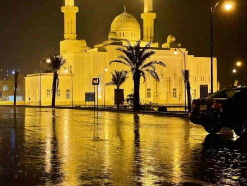

Rain falls on the pavement as footsteps pass by.
Press Play to begin.
Time: 0 seconds / 75 seconds
Explore the soundscape
The picture changes with the audio. You can also choose a scene below.
About my soundscape
Karachi is my hometown. This piece imagines an evening walk through the city after the rain. It begins with rain and footsteps, moves through traffic and horns, and ends with waves by the Arabian Sea.